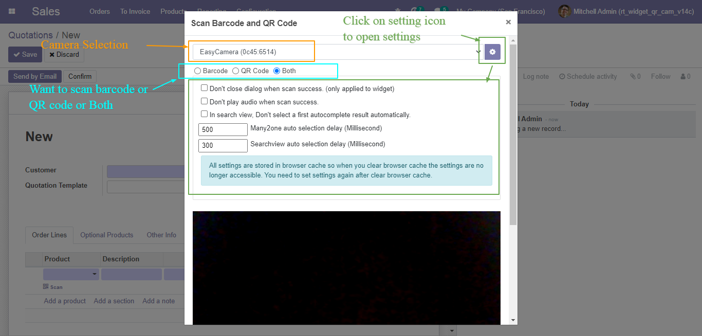
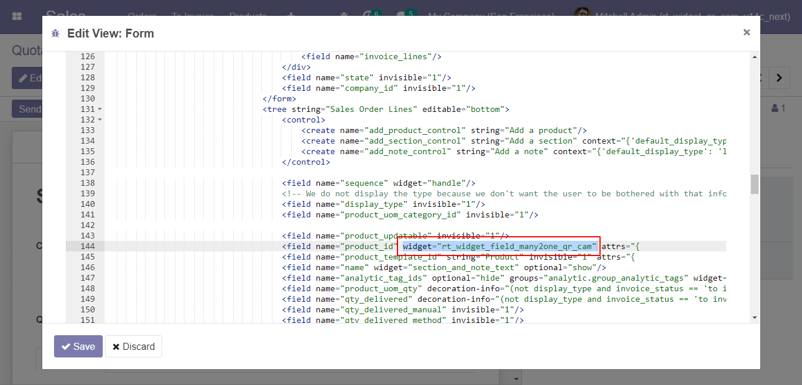
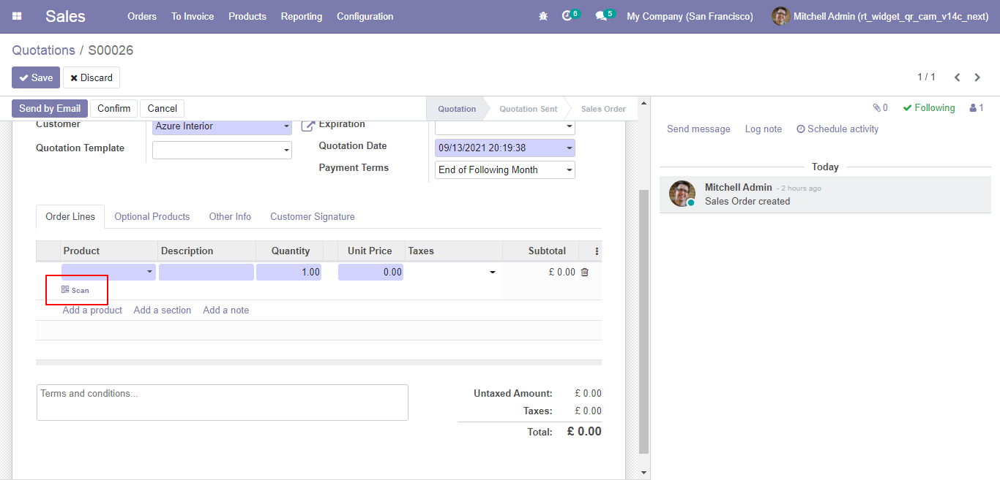
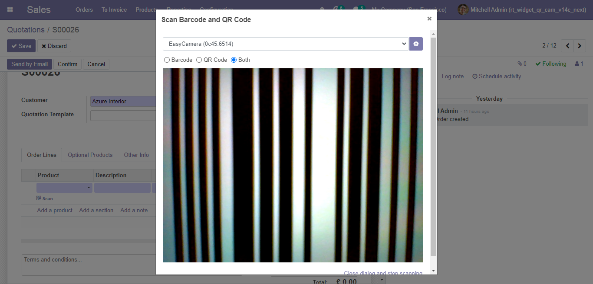
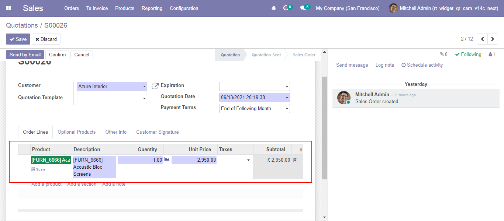
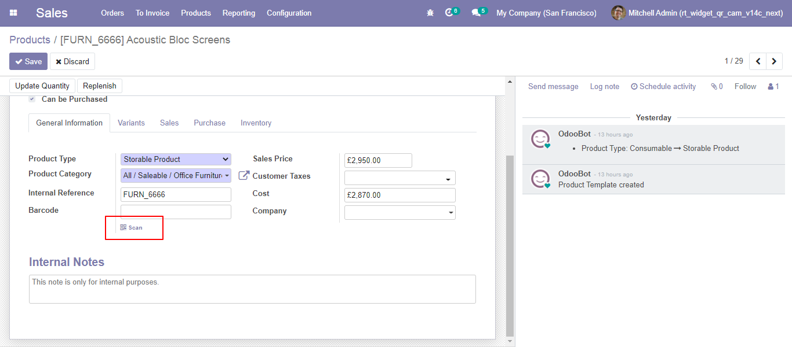
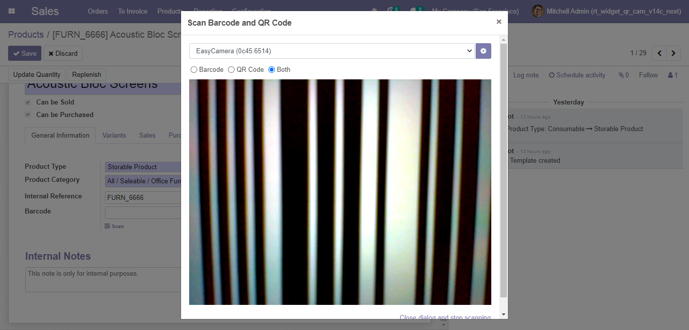
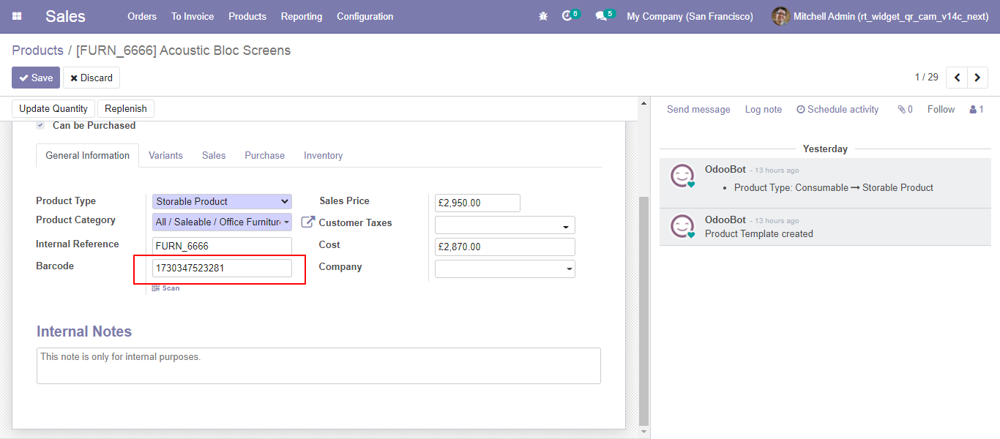

Configuration
Lots of options to easily play with barcode and QR code
- Camera Selection option
- Scan just barcode or QR code or Both option
- Don't close dialog when scan success (only applied to widget) option
- Don't play audio when scan success option
- In search view, Don't select a first autocomplete result automatically option
- Many2one auto selection delay (Millisecond)
- Searchview auto selection delay (Millisecond)

Barcode and QR Code scanner widget for many2one field
Scanning Barcode and QR Code to search and select record in many2one field.
for example, search and select product by barcode, QR code, name in sale, purchase, account, inventory etc.
Add widget="rt_widget_field_many2one_qr_cam" in any many2one field (you can use it with any model and any many2one field)

Scan button will visible just below the field in edit mode.
click on button and scan barcode or QR code as shown in above video

Scan barcode or QR code

After scan successful related record selected in many2one field (here Product)

Barcode and QR Code scanner widget for character field
Populate a character field value by scanning Barcode and QR Code
(Field onchange event is also fired if you want to perform some operation based on value change)
Add widget="rt_widget_field_char_qr_cam" in any character field (you can use it with any model and any character field)

Scan button will visible just below the field in edit mode.(form view in edit mode)
click on button and scan barcode or QR code as shown in above video

Scan barcode or QR code

After scan successful scanned value will populated in field (here Barcode)

Search any document by Barcode and QR Code globally using search view.
With Barcode and QR Code Scanner In Search View Globally,
all warehouse processes,
Sale Order Processes,
Purchase Order Processes,
Account Processes and Product Lot/SN,
Inventory Adjustment,
Manufacturing workflow,
Event Management are available out of the box, and there is no need to separately integrate ERP and a Barcode and QR Code scanner.
Search and select any many2one and many2many field by Barcode and QR Code scanner.
Search and select any many2one and many2many field by Barcode and QR Code scanner easily.
for example, search products by barcode, QR code, name in sale, purchase, account, inventory etc.
Odoo field widget For Many2one and Character Field.
Search any document by Barcode and QR Code in search view.
Search any Many2one field & Many2many field by Barcode and QR Code in search view.
Supports multiple cameras. The selected camera will be cached in the cookie as default.
Fast accurate and reliable Barcode and QR Code scanning.
Play sound when Barcode and QR Code scan.
Supported Code formats: QR Code, Code 128, Code 93, Code 39, Code 39 VIN, Codabar, I2of5(Interleaved 2 of 5), 2of5
15.0.2 (17 Jun 2022)
improved speed to search many2one record by barcode or qr code
15.0.1 (22 Nov 2021)
First Release